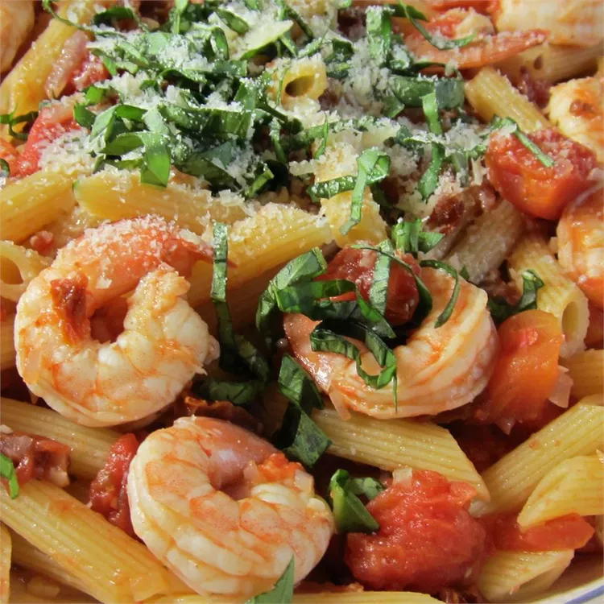

Penne with Shrimp

A light but tasty Italian dish!
Ingredients
- 1 (16 ounce) package penne pasta
- 2 tablespoons olive oil
- ¼ cup chopped red onion
- 1 tablespoon chopped garlic
- ¼ cup white wine
- 2 (14.5 ounce) cans diced tomatoes
- 1 pound shrimp, peeled and deveined
- 1 cup grated Parmesan cheese
Directions
-
Bring a large pot of lightly salted water to a boil.
Add pasta and cook for 8 to 10 minutes or until al dente; drain.
-
Heat the oil in a skillet over medium heat. Stir in onion and garlic,
and cook until onion is tender. Mix in wine and tomatoes, and continue
cooking 10 minutes, stirring occasionally.
-
Mix shrimp into the skillet, and cook 5 minutes, or until opaque.
Toss with pasta and top with Parmesan cheese to serve.